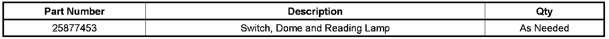

Lighting - Dome/Reading Lamps Inoperative
TECHNICALBulletin No.: 08-08-42-004
Date: August 27, 2008
Subject:
Overhead Dome and/or Reading Lamp Inoperative With Push Button Switch (Replace Switch(es))
Models:
2007-2009 Cadillac Escalade, Escalade ESV, Escalade EXT
2007-2009 Chevrolet Avalanche, Silverado (New Body Style), Suburban, Tahoe
2007-2009 GMC Sierra (New Body Style), Sierra Denali, Yukon, Yukon XL, Yukon Denali, Yukon Denali XL
Condition
Some customers may comment that the overhead dome lamp and/or reading lamp is inoperative with the push button switch(es), even though the lamp still operates when the doors are opened.
Correction
The dome and/or reading lamp switch is now available for service as a separate part. The lamp switch was formerly available as part of the entire dome lamp housing or the roof console assembly. DO NOT replace the entire overhead dome lamp assembly or roof console if the lamp switch is required.
Replace the lamp switch(es) using the steps below.
1. Remove the lamp lens by using a plastic flat-bladed tool to pry down on the right side of the lamp lens.
2. Remove the push button(s) (1) from the inoperative lamp switch(es).
3. Remove the dome lamp housing and/or roof console assembly. Refer to Dome Lamp Replacement and/or Roof Console Replacement in SI.
4. Slide the lamp switch(es) (1) away from the three electrical contact tabs (2) located on the back of the housing.
5. Remove the old switch(es) from the back side of the housing.
6. Install the new switch(es) through the back side of the housing.
7. Align the switch(es) to the front slots as shown.
8. Slide the new switch(es) into the three electrical contact tabs.
9. Align the push button tabs to the lamp switch(es) and install the button(s).
10. Install the dome lamp housing and/or roof console assembly to the headliner panel starting with the right side. Refer to Dome Lamp Replacement and/or Roof Console Replacement in SI.
11. Install the lamp lens.
12. Verify this condition has been corrected by cycling the push button switch(es) four times.

Parts Information
Warranty Information
Important:
If the switches were replaced in both locations, the roof console and the center dome lamp, the total time of 0.7 hr should be submitted in regular labor hours.
For vehicles repaired under warranty, use the table.

Disclaimer